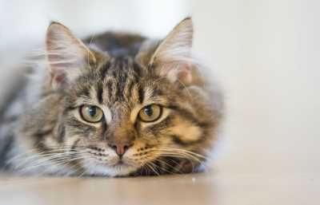

Kot domowy – udomowiony gatunek ssaka z rzędu drapieżnych z rodziny kotowatych. Koty zostały udomowione około 9500 lat temu i są obecnie najpopularniejszymi zwierzętami domowymi na świecie. Gatunek prawdopodobnie pochodzi od kota nubijskiego, przy czym w Europie krzyżował się ze żbikiem.Na świecie żyje obecnie ponad 500 mln kotów domowych.
